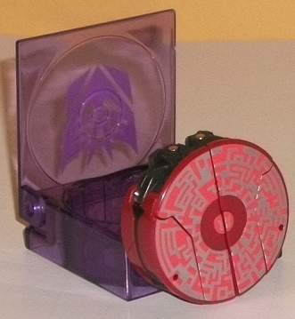
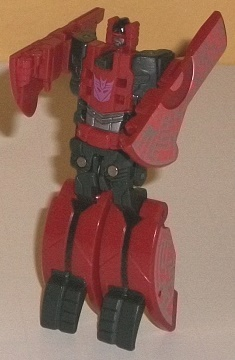
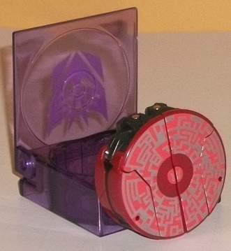
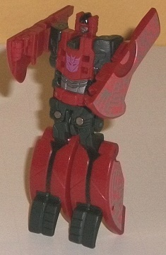
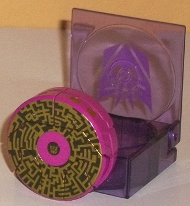
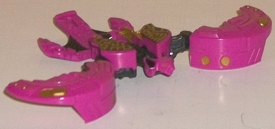

 
Difficulty of Transformation : Very Easy
Color Scheme : Moderately dark red, charcoal black, silver, and some light red
Individual Rating : 6.9
Allegiances
: Decepticon
Size
: Legends 2-pack
Overall Rating
: 7.4
(NOTE: Because this set is composed of repaints,
this is not a full-blown review. This mainly covers any changes made to
the set and the color scheme, and merely compares it to the original versions
of these molds. For a review on FoC Rumble-- the mold used for Frenzy--
go
here
. For a review on FoC Laserbeak--
the mold used for Ratbat-- go
here
.)
 Decepticon
Frenzy
Decepticon
Frenzy


Difficulty of Transformation
: Very
Easy
Color Scheme
: Moderately dark red,
charcoal black, silver, and some light red
Individual Rating
: 6.9
Although depending upon
what toy series you're talking about they can change, for the FoC series,
Hasbro has definitely identified Frenzy as The Red One. As such, obviously,
red is his main color-- a moderately dark, dull version of the color, that
is. The main secondary color on this mold-- mostly on the "robot bits"--
continues to be a charcoal black, which goes well enough with the red,
but isn't particularly eye-catching-- it's just sort of "there" as a neutral
color. He's got a bit of silver on his head and stomach in robot mode,
but as with most of the FoC data disc TF molds, the most eye-catching part
about Frenzy are the "circuitry pattern" paint apps on the top of his disc
mode. Here Frenzy gets some pretty cool silver circuitry lines, with a
noticeably lighter shade of red forming the main "background" color on
the top of said disc. It looks pretty cool-- but, admittedly, it doesn't
look nearly as cool as Rumble's light blue-and-silver circuitry patterns.
No mold changes have
been made to FoC Frenzy-- just like his pal Rumble, he also comes with
a translucent purple holding case for his disc mode, with a big Decepticon
symbol on it.
 Ratbat
Ratbat


Difficulty of Transformation
: Very
Easy
Color Scheme
: Violet, black, and
some metallic gold
Individual Rating
: 7.8
It may not look like
it at first glance, but except for some "core" black parts like the neck
and inner wings in bat mode, Ratbat is actually a completely new mold when
compared with Laserbeak; it just uses the exact same transformation scheme
and overall design. Even those parts that you don't think would be essential
for making him look like a mechanical bat-- like the mold detailing on
his outer wings-- has been changed. Overall his detailing is a bit more
round and less "edgy" than Laserbeak's, and the tailfeather piece from
Laserbeak has been remolded to look like Ratbat has little tiny rear legs
and a small tail-- as you'd expect from a bat. (That said, the rear "tailfeather"
piece is still just one piece, so there unfortunately isn't any articulation
back there or anything.) The head's also been remolded into a bat's, but
unfortunately I think it looks a bit too small. I realize bat's heads tend
to look smaller proportionally than a bird's anyways, but it still looks
a bit off to me-- like at least the ears should be bigger, or something.
That said, at least his ears and eyes are painted, whereas Laserbeak's
head lacked any sort of paint. The bits of round gold detailing on the
wings also look good, and the bits of black used on his "tailfeather" piece
to more clearly delineate his rear legs from his tail is put to good use.
As is the case with all the FoC data disc TFs, Ratbat has some really nice
circuitry paint detailing on the top of his disc mode-- a nice gold pattern
against black, which really contrast against each other extremely well.
Add to all this the rather eye-catching shade of violet plastic used for
most of Ratbat, and he comes off looking mighty good in the color scheme
department.
Like other FoC data
disc TFs in these two-packs, Ratbat comes with a holding case for his disc
mode-- and since he's a Decepticon, obviously it's translucent purple with
a lighter purple Decepticon symbol painted on the top.
This data disc 2-pack is probably the strongest out of all the disc 2-packs, in terms of the overall combination of color schemes and molds. Ratbat is definitely the star of the pack, both in terms of the elegance of the mold, the color scheme, and the fact that he gets a bunch of original retooling to make him into a bat instead of a bird. That said, though I prefer Rumble's blue color scheme better on the mold, Frenzy's red here certainly isn't bad, and he uses one of the better data disc molds, as well. Recommended if you like the whole "disc deployer" gimmick that Hasbro introduced with these toys and the FoC Soundwave mold, and don't mind the lack of articulation that was sacrificed to implement this gimmick.
Reviews by Beastbot